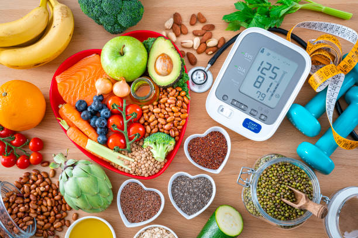

Explore Our Latest Tips
Discover articles, guides, and tips to help you live a healthier life.
5 Easy Exercises for a Healthier You

Incorporating simple exercises into your daily routine can significantly improve your overall health. Below, we outline five easy exercises that anyone can start today to stay fit and energetic:
- Walking: A brisk 30-minute walk can boost cardiovascular health and reduce stress levels.
- Bodyweight Squats: Perfect for strengthening your lower body and core muscles.
- Push-Ups: A classic move to build upper body strength without any equipment.
- Planks: Great for building core stability and improving posture.
- Yoga Poses: Simple poses like the downward dog or child’s pose can improve flexibility and calm the mind.
Remember to stay hydrated and listen to your body to avoid overexertion. These exercises are a fantastic starting point for anyone new to fitness or looking to stay active at home.
Eating Healthy on a Budget
Maintaining a nutritious diet doesn't have to be expensive. Here are some tips to eat healthy without stretching your budget:
- Plan Your Meals: Create a weekly meal plan and stick to a shopping list to avoid unnecessary purchases.
- Buy in Bulk: Staples like rice, beans, and oats are affordable and have a long shelf life.
- Opt for Seasonal Produce: Seasonal fruits and vegetables are often cheaper and more flavorful.
- Cook at Home: Preparing meals at home saves money compared to eating out and allows you to control ingredients.
- Minimize Food Waste: Use leftovers creatively to make new meals or freeze them for later use.
By adopting these habits, you can enjoy healthy meals while keeping costs low, ensuring that both your body and wallet remain happy.
The Importance of Hydration for Health
Staying hydrated is crucial for overall health and wellness. Here’s why drinking enough water is essential:
- Boosts Energy: Dehydration can cause fatigue, so drinking water helps keep you energized throughout the day.
- Improves Digestion: Water aids in digestion and helps prevent constipation.
- Supports Skin Health: Staying hydrated can promote clearer and healthier skin.
- Regulates Body Temperature: Water helps maintain your body’s temperature, preventing overheating during physical activity.
- Detoxifies the Body: Drinking water helps flush toxins and waste from the body through urine.
To ensure you’re properly hydrated, aim to drink at least 8 glasses (64 oz) of water a day, or more depending on your activity level and climate.
How to Get Quality Sleep for Better Health
Getting enough quality sleep is essential for physical and mental health. Here are some tips to improve your sleep:
- Establish a Routine: Go to bed and wake up at the same time every day to regulate your body’s internal clock.
- Create a Relaxing Environment: Make your bedroom a calm space by keeping it dark, quiet, and cool.
- Limit Screen Time: Avoid using electronic devices like phones or computers before bed as they can interfere with sleep.
- Watch Your Diet: Avoid heavy meals, caffeine, and alcohol close to bedtime as they can disrupt sleep.
- Practice Relaxation Techniques: Meditation, deep breathing, or reading a book can help prepare your body for sleep.
By prioritizing good sleep habits, you can enhance your mood, boost cognitive function, and improve overall well-being.
Stress Management Tips for a Healthier Life
Chronic stress can negatively impact your health, so it’s important to find ways to manage it effectively. Here are some strategies:
- Exercise Regularly: Physical activity releases endorphins, which help reduce stress and improve mood.
- Practice Mindfulness: Techniques such as meditation, deep breathing, and yoga can help calm the mind.
- Take Breaks: Take regular breaks during the day to relax and recharge, especially when feeling overwhelmed.
- Talk to Someone: Sharing your feelings with friends, family, or a counselor can provide emotional support.
- Get Outside: Spending time in nature can help lower stress levels and improve mental clarity.
By incorporating these stress management practices into your life, you can reduce stress and improve your overall health.